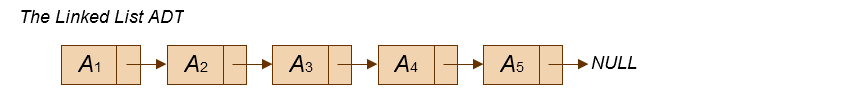

Next, 最后一个单元Next指向NULL
struct Node{
ElementType Element;
struct Node *Next;
}

#ifndef _List_H
struct Node;
typedef struct Node *PtrToNode;
typedef PtrToNode List;
typedef PtrToNode Position;
List MakeEmpty( List L );
int IsEmpty( List L );
int IsLast( Position P, List L );
Position Find( ElementType X, List L );
void Delete( ElementType X, List L );
Position FindPrevious( ElementType X, List L );
void Insert( ElementType X, List L, Position P );
void DeleteList( List L );
Position Header( List L );
Position First( List L );
Position Advance( Position P );
ElementType Retrieve( Position P );
#endif /* _List_H */
/* Place in the interface file */
struct Node
{
ElementType Element;
Position Next;
};
typedef struct{
int CoefArray[MaxDegree+1];
int HighPower;
} *Polynomial;
#include<stdio.h>
#define M 10000
void BucketSort(int arr[], int length){
int i, j, k, count[M]={0};
for(i = 0; i < length; i++){
count[arr[i]] += 1;
}
j=0;
for(i = 0; i < M; i++){
for(k = 0; k < count[i]; k++){
arr[j]=i;
j++;
}
}
}
| Slot | Element | Next |
|---|---|---|
|
0 1 2 3 4 5 6 7 8 9 10 |
1 2 3 4 5 6 7 8 9 10 0 |
static Position
CursorAlloc( void )
{
Position P;
P = CursorSpace[ 0 ].Next;
CursorSpace[ 0 ].Next = CursorSpace[ P ].Next;
return P;
}
static void
CursorFree( Position P )
{
CursorSpace[ P ].Next = CursorSpace[ 0 ].Next;
CursorSpace[ 0 ].Next = P;
}
| Slot | Element | Next |
|---|---|---|
|
0 1 2 3 4 5 6 7 8 9 10 |
- b f header - header - c d e a |
6 9 0 7 0 10 4 8 2 0 1 |
Stack:
Operation:
错误：
Stack是一个List，所以任何实现List的方式都可以实现Stack,最常用的有两种：
概要:
实现:
花费: